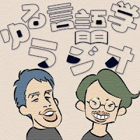

1 | Ranking | Title | Difficulty Explanation | Description | Picture |
|---|---|---|---|---|---|
2 | Very Easy | Japanese podcast for beginners (Nihongo con Teppei) | The words are introduced carefully. Topics repeat a lot. Teppei may use a word in English per episode to clarify something that is hard to explain in Japanese. Slower pace of speech. | Bright man in his forties, perfect for a first podcast. Teppei often repeats himself to reformulate and explain the same though. Has great intuition about what's hard or easy in the language. Obviously learner-targeted. | |
3 | Very Easy-Easy | Japanese with Shun | Short episodes (~7-10min). Slow speaking with pauses, limited grammar and vocabulary used mainly from Genki I, new vocab at the end of episodes. The limited grammar and slow speaking is what makes this easy. Overall, perfect for a beginner. | Daily life and various topics. Shun is a backpacker who has traveled to places such as South America and New Zealand and talks about life from his perspective. He is also interested in weightlifting and is a Japanese teacher. He also has a YouTube channel. | |
4 | Easy | Nihongo con Teppei Z | The podcast is pretty accessible as it is targeted towards beginners trying to learn Japanese. The host speaks slowly and clearly, so it is good as a first podcast. | Podcast oriented at beginners in Japanese where multiple topics are discussed. | |
5 | Easy | Japanese with Teppei and Noriko | Short to very short episodes, recurring topics, slice of life, food and so on. More complicated words are explained. | Unscripted. Great podcast to listen in parallel with Teppei Z. Teppei and Noriko are only meeting when they record this podcast, so their conversation starts as something very shallow and go deeper on each episode. They don't speak slowly, but because of recurring topics, you will understand a lot after the first 100 episodes. | |
6 | Easy | YUYUの日本語Podcast | Japanese man living in Mexico who makes Japanese content for learners. As such, it is adapted even for beginners. | Includes random stuff usually related to his own experiences. He accepts requests for podcast topic. Also does live streams nowadays. | .jpg) |
7 | Easy | Let’s learn Japanese from small talk! | Learner-targeted, unscripted, not adapted, but hard words are often explained or sometimes mentioned in English. There is also a vocabulary list available for each episode. | Two women, everyday and slice of life topics. Good introduction to realistic 会話 podcasts that are still guided a bit for learners. | |
8 | Easy-Medium | ことのは日本語の会話のpodcast | The topics are typically not too advanced, and the audio is clear. It's a tiny bit harder than easy due to the fact that there are two hosts speaking to one another, which can complexify things a bit. This podcast is nonetheless targeted at learners, so if a rarer word comes up, it is often explained in simple Japanese. | The hosts are two women in their high 20s maybe low 30s, one of them is married. Main topics include life in Japan, あるあるs and just general daily conversation. They occasionally talk about societal issues. | |
9 | Easy-Medium | 4989 Utaco | Probably one of the easiest podcasts intended for native speakers. The host, Utaco, speaks clearly. Having familiarity with the way things work in America (such as signing up for college classes or what it's like to go to the DMV) leads to a big boost in comprehension. | Utaco lives with her husband and cats in California and talks about her struggles and difficulties in daily life (where the name of the podcast comes from 4989=四苦八苦). She has various corners like "What I miss about Japan," "My favorite things," and talks about learning English, going to college, getting a job, making friends, tap dancing, moving to a new town, and cultural differences between the US and Japan. Transcript | |
10 | Easy-Medium | シノブとナルミの毒舌アメリカンライフ | It's 雑談 with two adult Japanese women who have experience living in the states. So it can get a little bilingual from time to time, but mostly Japanese, spoken by adults. | Two women, Narumi and Shinobu. They met in Houston and started a podcast there. They talk about normal life topics. Narumi relocated to Okinawa (she's originally from there) but goes back to Houston from time to time. | |
11 | Medium | GOLDNRUSH PODCAST | The podcast typically talks about the music industry and hip-hop world. As a result, references can sometimes make it hard to fully understand what is being discussed. However, it's still completely enjoyable even if you're not knowledgeable about that industry. The vocabulary is generally fairly simple overall, but slang is used quite frequently. This can vary depending on the guest, but conversations can also sometimes move at a fast pace. | Half-Japanese host somewhere in his low to mid 20s interviews people in the music industry as well as youtubers and other half-Japanese usually involved in music/hip hop. | |
12 | Medium | 雑談72% | Standard podcast targeted at natives with two men speaking. Great stepping stone from the easier podcasts. | Two men discussing everyday, slice of life topics, sports and sometimes simple news like the Olympics. | |
13 | Medium | カワノユウマのマメトーク | This is a podcast for natives and is not presented by a professional voice actor. He sometimes makes mistakes, uses filler words, and speaks at a normal pace for natives. The presenter is male and I believe is in his mid-late 20s. | This is a coffee podcast hosted by a roaster and cafe owner in Tokyo. The content ranges from what it's like to open up a business in Japan, to how to dial in different coffee brewing variables, stories about his trips to coffee growers around the world, and just enjoying/describing different coffees. He uploads weekly, there are 180 episodes, and most are about 20 mins long. | |
14 | Medium-Hard | となりの雑談 | The transition between topics is not always very logical. Both speakers are well-educated and use complex vocabulary. Topics vary a lot. While it is still 雑談, it's as real as it gets. | Two women, one of them an author and the other a radio host. It feels like you're eavesdropping on them sitting in a café, talking about a really broad range of topics, often related to relationships and society. Subs | |
15 | Medium-Hard | ジェーン・スー生活は踊る | It can be a really challenging show, with no consistent theme/domain, but a brilliant wealth of listening material for natural speech and conversation. | Such a variety of topics are covered, that it's hard to summarise what the show is about; it is fundamentally anything to do with life, and lifestyle topics. It's lighthearted and entertaining while being aimed at adults, sometimes with serious advice for the お悩みコーナー、and is an excellent source of keeping up to date about day to day culture and life in Japan - currently trending foods, 便利グッズ、places to visit. Subs | |
16 | Medium-Hard | Over The Sun | They chat about any and all topics, and read messages from listeners, but many of their jokes and discussions can reference older Japanese trends and culture, as the focus is around 中年女性 lives, though they welcome anyone to listen in. | 「Over The Sun」 is another pure 雑談 podcast by ジェーン・スー and 堀井美香。 It's more upbeat and wild than となりの雑談、with lots of joking around. Subs | |
17 | Medium-Hard | スーパニュートラルレディオショウ | There are three different people, occasionally four if there's a guest, who are all from Kansai, so if you're not used to the goofy pitch and dialect phrasing, it may throw you off. You need to be focused on what is being said to avoid losing the thread of the conversation, there's occasional slang and cultural references. They sometimes talk over one another which makes it harder as well. | Random conversations with three hosts and sometimes a guest. They typically engage in random 雑談 and answer questions from viewers. | |
18 | Hard | ゆる哲学ラジオ | This is pretty complex due to the nature of explaining philosopy, and while they do try to explain the concepts, they talk somewhat fast and you will need a good understanding of decently complex vocabulary. Having some understanding of philosophy to begin with would definitely help. | Podcast meant to introduce philosophy to an adult, native audience. YouTube | |
19 | Hard | ゆる言語学ラジオ | Similar to the above, this is pretty complex but it is also definitely very, very interesting for Japanese learners, because you will learn a lot about the language. | Podcast meant to introduce grammatical and linguistic concepts to an adult, native audience. YouTube |  |
20 | Very Hard | 歴史を面白く学ぶコテンラジオ | Complex subject matter, fast hosts that use slang, a lot of historical terms, very easy to lose the thread... This is hard, but also very rewarding. | Very interesting podcast discussing all sorts of historical episodes, and drawing parallels to contemporary societal issues and politics. YouTube | .jpg) |